PCA with some scatter plots
Last updated: 2023-01-10
Checks: 7 0
Knit directory: dgrp-starve/
This reproducible R Markdown analysis was created with workflowr (version 1.7.0). The Checks tab describes the reproducibility checks that were applied when the results were created. The Past versions tab lists the development history.
Great! Since the R Markdown file has been committed to the Git repository, you know the exact version of the code that produced these results.
Great job! The global environment was empty. Objects defined in the global environment can affect the analysis in your R Markdown file in unknown ways. For reproduciblity it’s best to always run the code in an empty environment.
The command set.seed(20221101) was run prior to running
the code in the R Markdown file. Setting a seed ensures that any results
that rely on randomness, e.g. subsampling or permutations, are
reproducible.
Great job! Recording the operating system, R version, and package versions is critical for reproducibility.
Nice! There were no cached chunks for this analysis, so you can be confident that you successfully produced the results during this run.
Great job! Using relative paths to the files within your workflowr project makes it easier to run your code on other machines.
Great! You are using Git for version control. Tracking code development and connecting the code version to the results is critical for reproducibility.
The results in this page were generated with repository version 5cc6e18. See the Past versions tab to see a history of the changes made to the R Markdown and HTML files.
Note that you need to be careful to ensure that all relevant files for
the analysis have been committed to Git prior to generating the results
(you can use wflow_publish or
wflow_git_commit). workflowr only checks the R Markdown
file, but you know if there are other scripts or data files that it
depends on. Below is the status of the Git repository when the results
were generated:
Untracked files:
Untracked: code/aaaTest
Untracked: code/analysisSR.R
Untracked: code/geneGO.R
Untracked: code/multiPrep.R
Untracked: code/regress.81916.err
Untracked: code/regress.81916.out
Untracked: code/regress.81918.err
Untracked: code/regress.81918.out
Untracked: code/regress.R
Untracked: code/regress.sbatch
Untracked: code/regressF.81919.err
Untracked: code/regressF.81919.out
Untracked: code/regressF.R
Untracked: code/regressF.sbatch
Untracked: code/snpGene.77509.err
Untracked: code/snpGene.77509.out
Untracked: code/snpGene.77515.err
Untracked: code/snpGene.77515.out
Untracked: code/snpGene.sbatch
Untracked: data/eQTL_traits_females.csv
Untracked: data/eQTL_traits_males.csv
Untracked: data/fMeans.txt
Untracked: data/fRegress.txt
Untracked: data/goGroups.txt
Untracked: data/mMeans.txt
Untracked: data/mPart.txt
Untracked: data/mRegress.txt
Untracked: data/starve-f.txt
Untracked: data/starve-m.txt
Untracked: data/xp-f.txt
Untracked: data/xp-m.txt
Untracked: figure/
Untracked: lmm.R
Untracked: qqdum.R
Untracked: scoreAnalysisMulticomp.R
Untracked: temp.Rmd
Unstaged changes:
Deleted: analysis/database.Rmd
Modified: code/baseScript-lineComp.R
Modified: code/fourLinePrep.R
Note that any generated files, e.g. HTML, png, CSS, etc., are not included in this status report because it is ok for generated content to have uncommitted changes.
These are the previous versions of the repository in which changes were
made to the R Markdown (analysis/pca.Rmd) and HTML
(docs/pca.html) files. If you’ve configured a remote Git
repository (see ?wflow_git_remote), click on the hyperlinks
in the table below to view the files as they were in that past version.
| File | Version | Author | Date | Message |
|---|---|---|---|---|
| html | 9e86f56 | nklimko | 2023-01-08 | Build site. |
| html | 3751eb8 | nklimko | 2022-12-14 | Build site. |
| html | 88ee9ec | nklimko | 2022-11-29 | Build site. |
| Rmd | 6cb699d | nklimko | 2022-11-29 | wflow_publish("analysis/*") |
Multiple Comparison
Starvation was plotted against every other trait and correlations were calculated. Ideally, strong correlation between traits can be used to increase the impact of PCA as traits with strong correlations can be used to reduce dimensions. Strong correlations allow for calculated columns.
# Read in tables
dtf <- fread("data/eQTL_traits_females.csv")
dtm <- fread("data/eQTL_traits_males.csv")
#Change column order to line, starvation, everything else
setcolorder(dtf, c(1,10,2:9,11:19))
#male has aggression moved to end to line up all other column indices
setcolorder(dtm, c(1,11,3:10,12:20,2))
# Bind tables on line
bound <- dtm[dtf, on=.(line)]
# create average starvation
x <- (bound[,2,with=FALSE] + bound[,21,with=FALSE]) / 2
storage <- rep(0,18)
gg <- vector(mode='list', length=18)
# AGGRESSION, male only
yL <- colnames(bound[, 20, with=FALSE])
x <- bound[,2]
y <- bound[,20]
raw <- na.omit(cbind(x,y))
clean <- setDT(raw)
colnames(clean) <- c("starvation", "trait")
corCoeff <- str_sub(as.character(cor.test(clean$starvation, clean$trait)[4]), 8,16)
storage[1] <- as.numeric(corCoeff)
graphTitle <- paste0(colnames(bound[, 20, with=FALSE]),": R=",corCoeff)
gg[[1]] <- ggplot(clean, aes(x=starvation, y=trait)) +
geom_point() +
geom_smooth(formula = y ~ x, method=lm) +
labs(title = graphTitle, x="starvation",y=yL)
# Determine average of each trait
for(i in 3:19)
{
#title <- paste("starvation resistance vs",colnames(bound[, i, with=FALSE]))
j <- i + 19
y <- (bound[,i,with=FALSE] + bound[,j,with=FALSE]) / 2
yL <- colnames(bound[, i, with=FALSE])
raw <- na.omit(cbind(x,y))
clean <- setDT(raw)
colnames(clean) <- c("starvation", "trait")
corCoeff <- str_sub(as.character(cor.test(clean$starvation, clean$trait)[4]), 8,16)
storage[i-1] <- as.numeric(corCoeff)
graphTitle <- paste0(colnames(bound[, i, with=FALSE]),": R=",corCoeff)
gg[[i-1]] <- ggplot(clean, aes(x=starvation, y=trait)) +
geom_point() +
geom_smooth(formula = y ~ x, method=lm) +
labs(title = graphTitle, x="starvation",y=yL)
}
gg <- cbind(gg,storage)
gg <- gg[order(abs(storage),decreasing=TRUE),]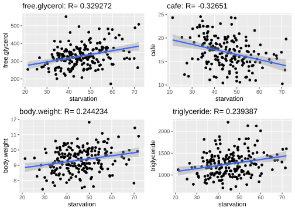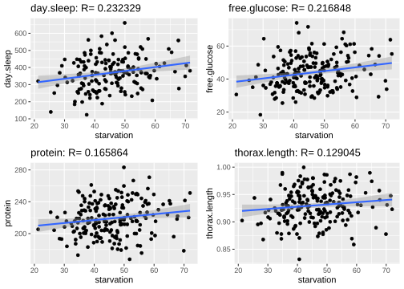 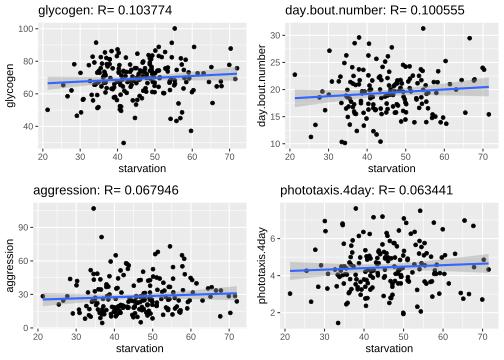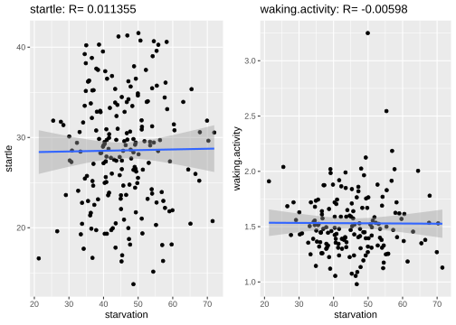
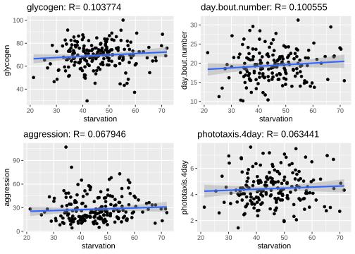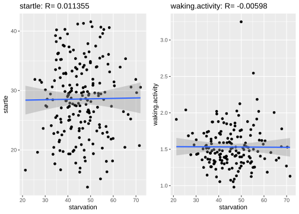
Principle Component Analyses
The goal of PCA with any dataset is to reduce the dimensionality into simpler and more intuitive bases.
Combined
This approach will mostly capture the difference between male and female expression levels with the intention of revealing starvatino resistance patterns within each subgroup.
dtf <- fread("data/eQTL_traits_females.csv")
dtm <- fread("data/eQTL_traits_males.csv")
xpf <- fread("data/xp-f.txt")
xpm <- fread("data/xp-m.txt")
#extract starvation and line
lsf <- dtf[,c(1,10)]
lsm <- dtm[,c(1,11)]
testF <- merge(xpf,lsf,all.x=TRUE)
testM <- merge(xpm,lsm,all.x=TRUE)
testF[,group:="female"]
testM[,group:="male"]
#move starvation label to front, after line
setcolorder(testF, c(1,11340:11341,2:11339))
setcolorder(testM, c(1,13577:13578,2:13576))
xpa <- rbind(testF, testM, fill=TRUE)
#set all NULL to zero
xpa[is.na(xpa)] <- 0
#PCA analysis
pcs <- prcomp(xpa[,c(-1,-2,-3)], scale=TRUE)
#compute variance and normalize to 100%
pcVar <- pcs$sdev^2
pcVarNorm <- round(pcVar/sum(pcVar)*100,2)
#Scree plot data of first 10 PCs
scree <- data.frame(1:10, pcVarNorm[1:10])
colnames(scree) <- c("PC", "variance")
#ggplot arguments - Scree plot
ggplot(data=scree, aes(x=PC, y=variance)) +
geom_bar(stat="identity") +
geom_text(aes(label=variance), vjust=-0.3, size=3.5) +
ggtitle("Combined Scree Plot")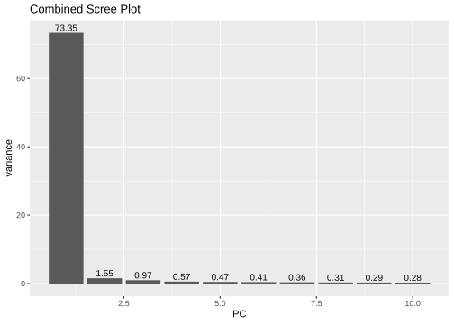
#plot data from PCA to ggplot
pcaPlot <- data.frame(xpa[,1:3], X=pcs$x[,1], Y=pcs$x[,2])
#Group identification
ggplot(data=pcaPlot, aes(x=X, y=Y, color=group)) +
geom_point() +
xlab(paste("PC1: ",pcVarNorm[1],"%", sep="")) +
ylab(paste("PC2: ",pcVarNorm[2],"%", sep="")) +
ggtitle("Combined PCA")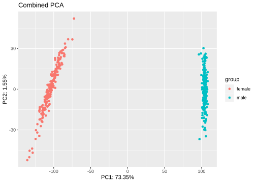
#starvation patterns
ggplot(data=pcaPlot, aes(x=X, y=Y, color=starvation)) +
geom_point() +
scale_color_gradient(low="yellow", high="red") +
xlab(paste("PC1: ",pcVarNorm[1],"%", sep="")) +
ylab(paste("PC2: ",pcVarNorm[2],"%", sep="")) +
ggtitle("Combined PCA")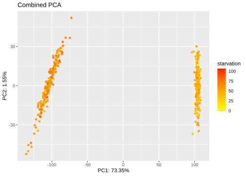
genCor <- cor(xpa[,c(-1,-2,-3)], pcaPlot[,4:5])
genCor <- as.data.frame(genCor)
corPC1 <- arrange(genCor,desc(abs(X)))
corPC2 <- arrange(genCor,desc(abs(Y)))
corPC1[1:25,1:2] X Y
FBgn0036574 -0.9994476 0.015503581
FBgn0030813 -0.9994402 0.014481880
FBgn0000166 -0.9994341 0.007468500
FBgn0029173 -0.9994116 0.014316733
FBgn0026149 -0.9994104 0.019171857
FBgn0260243 -0.9993800 0.017290305
FBgn0030710 -0.9993777 0.015469014
FBgn0035033 -0.9993673 0.015053230
FBgn0030970 -0.9993623 0.015048133
FBgn0036994 -0.9993527 0.011451261
FBgn0025635 -0.9993428 0.017545967
FBgn0029713 -0.9993422 0.011735793
FBgn0027490 -0.9993383 0.010063889
FBgn0040298 -0.9993369 0.010599945
FBgn0052343 -0.9993329 0.015196623
FBgn0035405 -0.9993285 0.010931830
FBgn0035488 -0.9993278 0.015839537
FBgn0038549 -0.9993264 0.006661995
FBgn0003687 -0.9993259 0.016413408
FBgn0040294 -0.9993204 0.017713218
FBgn0015553 -0.9993095 0.021006507
FBgn0034271 -0.9993047 0.019315042
FBgn0036761 -0.9992942 0.018037500
FBgn0030680 -0.9992926 0.022556194
FBgn0037922 -0.9992923 0.015828708corPC2[1:25,1:2] X Y
FBgn0011725 -0.18674818 -0.8524200
FBgn0027615 0.02965564 -0.8305274
FBgn0033673 -0.31828954 -0.8285839
FBgn0030025 -0.12913106 -0.8253212
FBgn0033916 0.20735194 -0.8002971
FBgn0040011 0.20408119 -0.7994841
FBgn0037710 -0.38276062 -0.7977241
FBgn0031061 0.21115675 -0.7723355
FBgn0011737 -0.39816655 -0.7661666
FBgn0035036 0.38189513 -0.7660016
FBgn0261397 0.05399896 -0.7651525
FBgn0051108 -0.15780029 -0.7621477
FBgn0016038 -0.45363605 -0.7617378
FBgn0027498 0.52434469 -0.7432742
FBgn0030625 -0.30107470 -0.7364380
FBgn0032723 0.31281137 -0.7351905
FBgn0265174 -0.10977290 -0.7350450
FBgn0037780 0.32092572 -0.7326972
FBgn0036685 -0.18851093 -0.7322960
FBgn0031191 -0.03150697 -0.7273204
FBgn0038515 0.51041263 -0.7261009
FBgn0037359 -0.21303338 -0.7162617
FBgn0001280 0.01511300 -0.7065890
FBgn0038788 0.26647160 -0.7049349
FBgn0033925 -0.56711475 -0.7021368Female
Looking at female expression alone against female starvation resistance to identify patterns in population structure.
# Read in data
xpf <- fread("data/xp-f.txt")
xpa <- xpf
#store lines, remove, convert to matrix, and label rows
xpaLines <- xpa[,line]
xpa <- xpa[,line:=NULL]
xpa <- as.matrix(xpa)
row.names(xpa) <- xpaLines
# performs PCA, scale=TRUE autocenters data around means
pcs <- prcomp(xpa, scale=TRUE)
#compute variance and normalize to 100%
pcVar <- pcs$sdev^2
pcVarNorm <- round(pcVar/sum(pcVar)*100,2)
#Scree plot data of first 10 PCs
scree <- data.frame(1:10, pcVarNorm[1:10])
colnames(scree) <- c("PC", "variance")
#ggplot arguments - Scree plot
ggplot(data=scree, aes(x=PC, y=variance)) +
geom_bar(stat="identity") +
geom_text(aes(label=variance), vjust=-0.3, size=3.5) +
ggtitle("Female Scree Plot")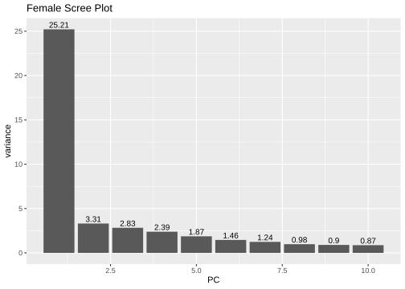
#PCA data
pcaPlot <- data.frame(line=rownames(pcs$x), pcs$x[,1], pcs$x[,2])
starveLines <- as.data.frame(dtf[,1:2])
pcaPlot <- na.omit(merge(x=pcaPlot,y=starveLines, by="line"))
colnames(pcaPlot) <- c("line","X","Y","starve")
#ggplot arguments - PC plot
ggplot(data=pcaPlot, aes(x=X, y=Y, label=line, color=starve)) +
geom_point() +
scale_color_gradient(low="yellow", high="red") +
xlab(paste("PC1: ",pcVarNorm[1],"%", sep="")) +
ylab(paste("PC2: ",pcVarNorm[2],"%", sep="")) +
ggtitle("Female PCA")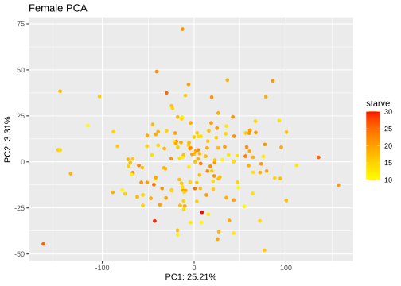
Quantitative approach: correlations for the top 25 genes for each principal component.
genCor <- cor(xpa, pcs$x[,1:2])
genCor <- as.data.frame(genCor)
corPC1 <- arrange(genCor,desc(abs(PC1)))
corPC2 <- arrange(genCor,desc(abs(PC2)))
print("Top 25 genes for PC1:")[1] "Top 25 genes for PC1:"corPC1[1:25,1:2] PC1 PC2
FBgn0002542 -0.9551091 0.0017007079
FBgn0026149 -0.9497579 0.0272471774
FBgn0027537 -0.9484541 0.0752546764
FBgn0024371 -0.9436779 0.0695918769
FBgn0003655 -0.9419791 0.0169838876
FBgn0086855 -0.9407986 -0.0893283133
FBgn0022213 -0.9397589 -0.0227156170
FBgn0024909 -0.9384338 0.0366265988
FBgn0039379 -0.9384321 0.0207904517
FBgn0260012 -0.9380160 -0.0655277575
FBgn0003124 -0.9380058 0.0134330351
FBgn0259978 -0.9375631 0.0180059645
FBgn0000404 -0.9373698 0.0570064514
FBgn0004510 -0.9353250 0.0138995494
FBgn0039293 -0.9346592 0.0187638594
FBgn0036574 -0.9345518 -0.1521812235
FBgn0046222 -0.9345403 -0.0461430451
FBgn0023423 -0.9339787 -0.0212875231
FBgn0261004 -0.9330182 -0.1110362511
FBgn0005777 -0.9329613 0.0023893919
FBgn0015509 -0.9327292 0.0051775809
FBgn0002283 -0.9326834 0.0008162528
FBgn0033713 -0.9324083 -0.0150418792
FBgn0000147 -0.9320814 0.0322442146
FBgn0025463 -0.9316539 0.1104685462print("Top 25 genes for PC2")[1] "Top 25 genes for PC2"corPC2[1:25,1:2] PC1 PC2
FBgn0266557 -0.44405752 -0.7144736
FBgn0039633 -0.21975906 -0.6945128
FBgn0261934 -0.28917005 -0.6944519
FBgn0004656 -0.40540860 -0.6775090
FBgn0261710 -0.46244941 -0.6757103
FBgn0261885 -0.43099439 -0.6643269
FBgn0035046 0.14527954 0.6599874
FBgn0260938 -0.35034056 -0.6554511
FBgn0003415 -0.49280541 -0.6442147
FBgn0031505 0.23686539 0.6384478
FBgn0033734 -0.25935346 0.6336896
FBgn0014391 0.14443586 0.6292862
FBgn0086655 -0.39976549 -0.6291383
FBgn0260794 -0.52508401 -0.6202584
FBgn0031118 -0.32588375 -0.6143818
FBgn0031698 -0.57669406 -0.6113601
FBgn0050373 -0.18425451 0.6108915
FBgn0037358 -0.29868080 0.6097206
FBgn0037098 -0.49601674 -0.6089022
FBgn0015269 -0.31830670 -0.6030480
FBgn0035424 -0.62947752 -0.6020936
FBgn0003048 -0.55242393 -0.6016356
FBgn0033460 -0.53606309 -0.5989068
FBgn0031107 -0.15900360 -0.5943350
FBgn0039214 -0.03120886 -0.5917226Male
Looking at male expression alone against male starvation resistance to identify patterns in population structure.
# Read in data
xpm <- fread("data/xp-m.txt")
xpa <- xpm
#store lines, remove, convert to matrix, and label rows
xpaLines <- xpa[,line]
xpa <- xpa[,line:=NULL]
xpa <- as.matrix(xpa)
row.names(xpa) <- xpaLines
# performs PCA, scale=TRUE autocenters data around means
pcs <- prcomp(xpa, scale=TRUE)
#compute variance and normalize to 100%
pcVar <- pcs$sdev^2
pcVarNorm <- round(pcVar/sum(pcVar)*100,2)
#Scree plot data of first 10 PCs
scree <- data.frame(1:10, pcVarNorm[1:10])
colnames(scree) <- c("PC", "variance")
#ggplot arguments - Scree plot
ggplot(data=scree, aes(x=PC, y=variance)) +
geom_bar(stat="identity") +
geom_text(aes(label=variance), vjust=-0.3, size=3.5) +
ggtitle("Male Scree Plot")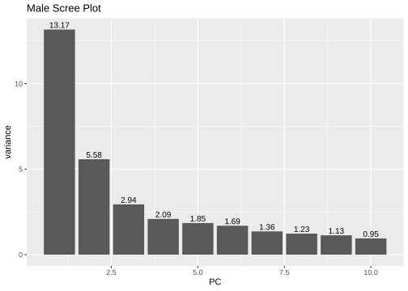
#PCA data
pcaPlot <- data.frame(line=rownames(pcs$x), pcs$x[,1], pcs$x[,2])
starveLines <- as.data.frame(dtf[,1:2])
pcaPlot <- na.omit(merge(x=pcaPlot,y=starveLines, by="line"))
colnames(pcaPlot) <- c("line","X","Y","starve")
#ggplot arguments - PC plot
ggplot(data=pcaPlot, aes(x=X, y=Y, label=line, color=starve)) +
geom_point() +
scale_color_gradient(low="yellow", high="red") +
xlab(paste("PC1: ",pcVarNorm[1],"%", sep="")) +
ylab(paste("PC2: ",pcVarNorm[2],"%", sep="")) +
ggtitle("Male PCA")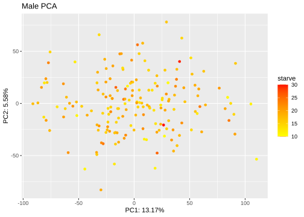
Quantitative approach: correlations for the top 25 genes for each principal component.
genCor <- cor(xpa, pcs$x[,1:2])
genCor <- as.data.frame(genCor)
corPC1 <- arrange(genCor,desc(abs(PC1)))
corPC2 <- arrange(genCor,desc(abs(PC2)))
print("Top 25 genes for PC1:")[1] "Top 25 genes for PC1:"corPC1[1:25,1:2] PC1 PC2
FBgn0040237 0.9516356 -0.06059154
FBgn0028997 0.9477636 -0.09561773
FBgn0028868 0.9463304 -0.02885302
FBgn0046332 0.9458636 -0.14317497
FBgn0035047 0.9458169 -0.11578090
FBgn0035852 0.9447429 -0.15573131
FBgn0039379 0.9440381 -0.17524985
FBgn0034132 0.9393418 -0.07575502
FBgn0032061 0.9392847 -0.11918686
FBgn0052351 0.9391388 -0.04602165
FBgn0045770 0.9379436 -0.15279889
FBgn0039651 0.9356158 -0.09571697
FBgn0031831 0.9355991 -0.12338666
FBgn0028379 0.9353622 -0.10770702
FBgn0039501 0.9351160 -0.18025622
FBgn0038630 0.9349758 -0.17174711
FBgn0052392 0.9349020 -0.04451645
FBgn0034826 0.9348962 -0.18968749
FBgn0037086 0.9348207 -0.11353418
FBgn0035707 0.9345246 -0.19945730
FBgn0031240 0.9344893 -0.21706268
FBgn0031171 0.9344854 -0.18792717
FBgn0003889 0.9340815 -0.13655950
FBgn0036687 0.9338887 -0.16467928
FBgn0039398 0.9330492 -0.21657000print("Top 25 genes for PC2")[1] "Top 25 genes for PC2"corPC2[1:25,1:2] PC1 PC2
FBgn0029785 0.12192458 0.7608525
FBgn0033699 0.15443441 0.7498466
FBgn0000319 -0.01177530 0.7409928
FBgn0010612 0.04694470 0.7390495
FBgn0004403 0.11596149 0.7348360
FBgn0024846 -0.04181795 0.7290463
FBgn0013987 -0.10979224 0.7267325
FBgn0037671 0.09382307 0.7262965
FBgn0005533 0.18251398 0.7227590
FBgn0003178 -0.05280979 0.7225617
FBgn0010198 0.05957415 0.7220613
FBgn0086472 0.10375612 0.7144960
FBgn0029529 0.14138145 0.7144605
FBgn0015521 0.16818631 0.7106158
FBgn0261606 0.14410943 0.7079210
FBgn0261592 0.12640064 0.7077203
FBgn0001092 -0.01211316 0.7070597
FBgn0040773 -0.01047885 0.7045846
FBgn0024814 0.22501129 0.7043728
FBgn0038834 0.17599833 0.7012447
FBgn0032480 0.14436031 0.7005844
FBgn0002590 0.12586372 0.6998639
FBgn0015756 0.14363694 0.6928994
FBgn0029888 0.09985687 0.6888837
FBgn0034245 0.03126595 0.6888511Troubleshooting
I plotted the top ten principal components against each other to visally identify any clustering among any of the components. all principal components fail to separate cleanly.
# Read in data
xpm <- fread("data/xp-m.txt")
xpa <- xpm
#store lines, remove, convert to matrix, and label rows
xpaLines <- xpa[,line]
xpa <- xpa[,line:=NULL]
xpa <- as.matrix(xpa)
row.names(xpa) <- xpaLines
# performs PCA, scale=TRUE autocenters data around means
pcs <- prcomp(xpa, scale=TRUE)
#compute variance and normalize to 100%
pcVar <- pcs$sdev^2
pcVarNorm <- round(pcVar/sum(pcVar)*100,2)
#PCA data
pcaPlot <- data.frame(pcs$x[,1:10])
par(mfrow=c(2,3))
for(i in 1:10){
for(j in 1:10){
if(i!=j){
plot(pcaPlot[,i], pcaPlot[,j])
}else{
#nothing
}
}
}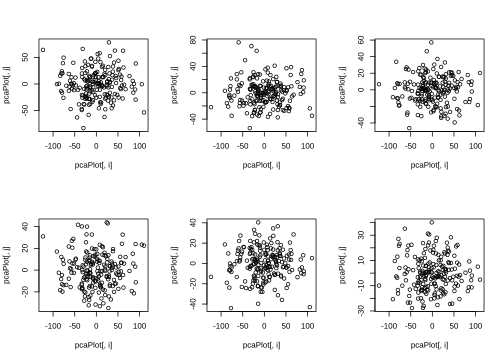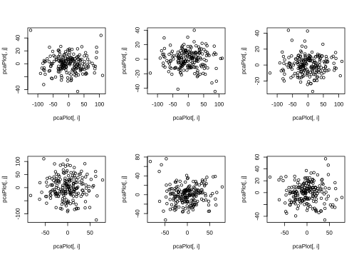 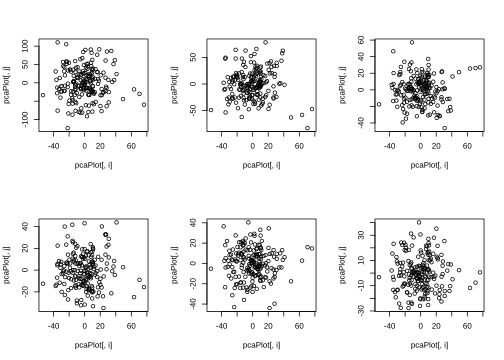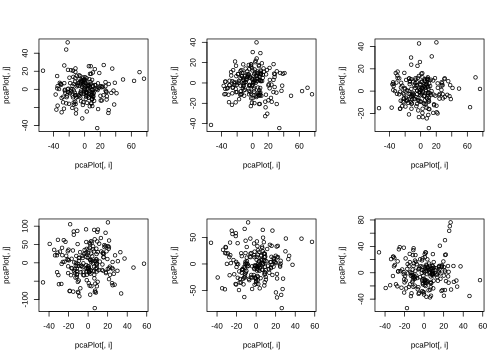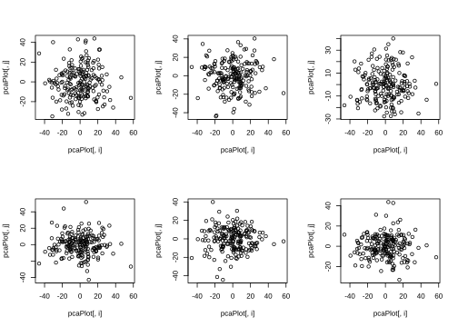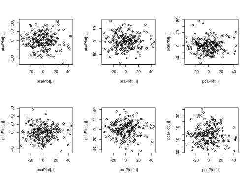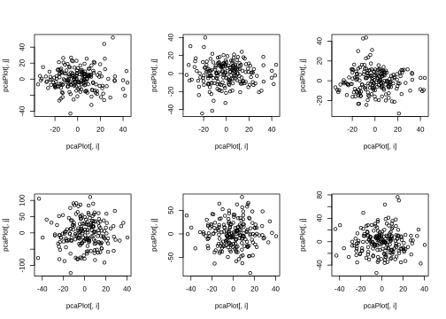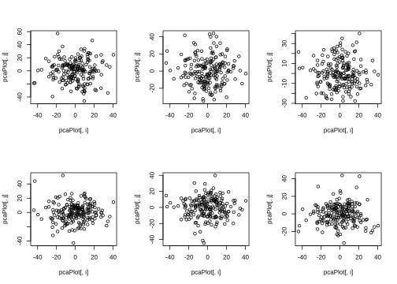
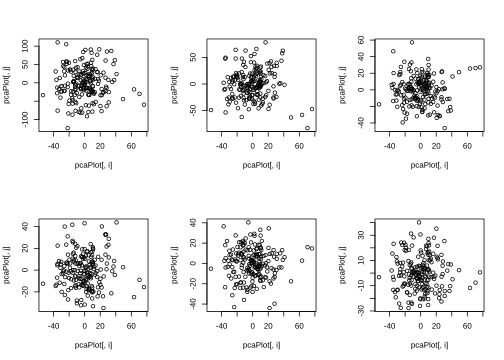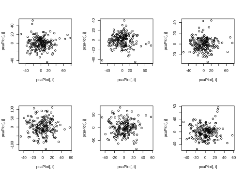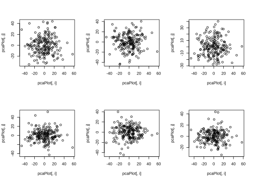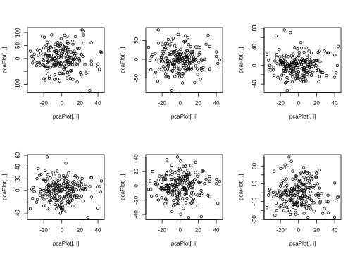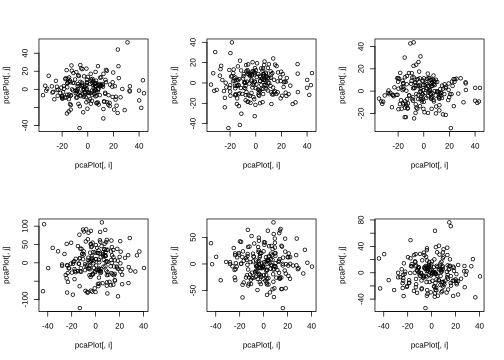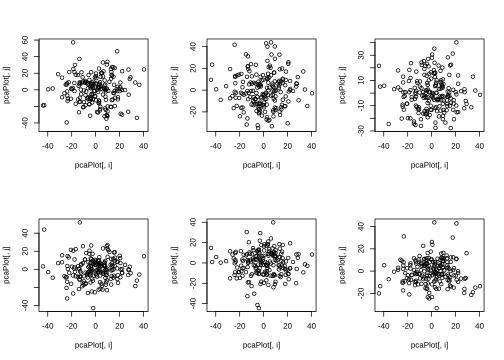 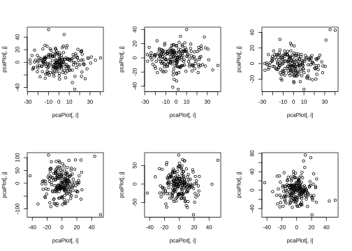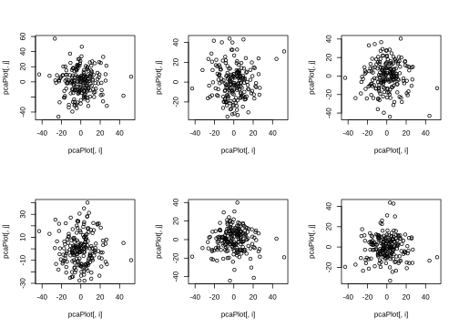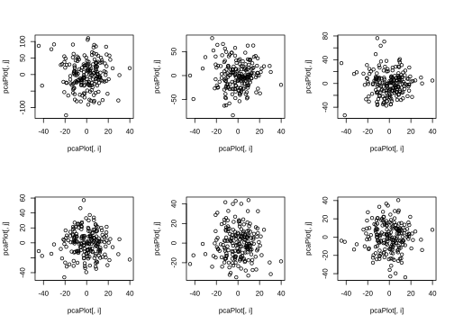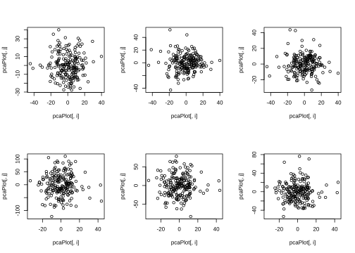
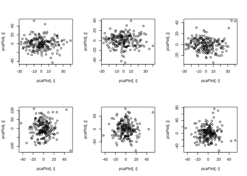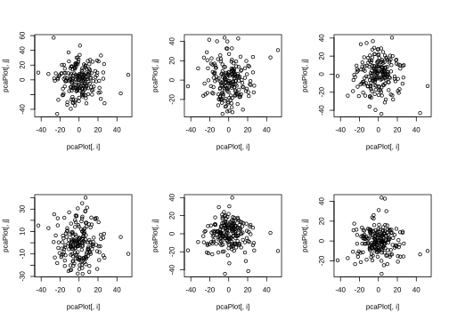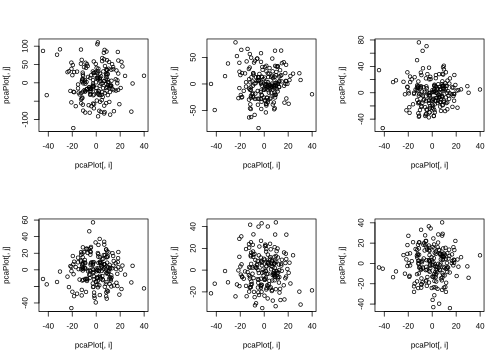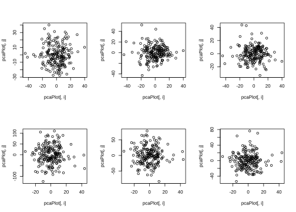
#ggplot arguments - PC plot
sessionInfo()R version 4.0.3 (2020-10-10)
Platform: x86_64-pc-linux-gnu (64-bit)
Running under: CentOS Linux 7 (Core)
Matrix products: default
BLAS/LAPACK: /opt/ohpc/pub/Software/openblas_0.3.10/lib/libopenblas_haswellp-r0.3.10.dev.so
locale:
[1] LC_CTYPE=en_US.utf-8 LC_NUMERIC=C
[3] LC_TIME=en_US.utf-8 LC_COLLATE=en_US.utf-8
[5] LC_MONETARY=en_US.utf-8 LC_MESSAGES=en_US.utf-8
[7] LC_PAPER=en_US.utf-8 LC_NAME=C
[9] LC_ADDRESS=C LC_TELEPHONE=C
[11] LC_MEASUREMENT=en_US.utf-8 LC_IDENTIFICATION=C
attached base packages:
[1] stats graphics grDevices utils datasets methods base
other attached packages:
[1] cowplot_1.1.1 ggplot2_3.3.5 data.table_1.14.2 stringr_1.4.0
[5] dplyr_1.0.8 workflowr_1.7.0
loaded via a namespace (and not attached):
[1] tidyselect_1.1.2 xfun_0.30 bslib_0.3.1 purrr_0.3.4
[5] lattice_0.20-45 splines_4.0.3 colorspace_2.0-3 vctrs_0.4.1
[9] generics_0.1.2 htmltools_0.5.2 mgcv_1.8-40 yaml_2.3.5
[13] utf8_1.2.2 rlang_1.0.4 later_1.3.0 pillar_1.7.0
[17] jquerylib_0.1.4 withr_2.5.0 glue_1.6.2 DBI_1.1.2
[21] lifecycle_1.0.1 munsell_0.5.0 gtable_0.3.0 evaluate_0.15
[25] labeling_0.4.2 knitr_1.38 callr_3.7.0 fastmap_1.1.0
[29] httpuv_1.6.5 ps_1.6.0 fansi_1.0.3 highr_0.9
[33] Rcpp_1.0.8.3 promises_1.2.0.1 scales_1.2.0 jsonlite_1.8.0
[37] farver_2.1.0 fs_1.5.2 digest_0.6.29 stringi_1.7.6
[41] processx_3.5.3 getPass_0.2-2 rprojroot_2.0.3 grid_4.0.3
[45] cli_3.3.0 tools_4.0.3 magrittr_2.0.3 sass_0.4.1
[49] tibble_3.1.6 crayon_1.5.1 whisker_0.4 pkgconfig_2.0.3
[53] Matrix_1.5-3 ellipsis_0.3.2 assertthat_0.2.1 rmarkdown_2.16
[57] httr_1.4.2 rstudioapi_0.13 R6_2.5.1 nlme_3.1-157
[61] git2r_0.30.1 compiler_4.0.3